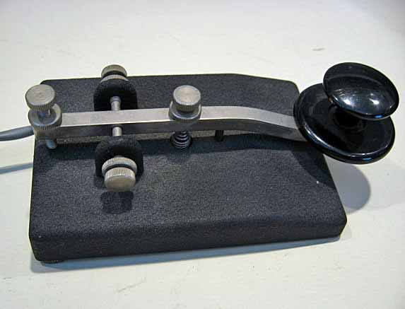
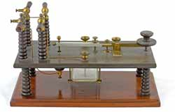
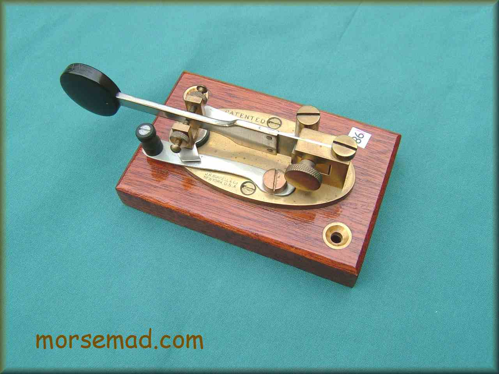
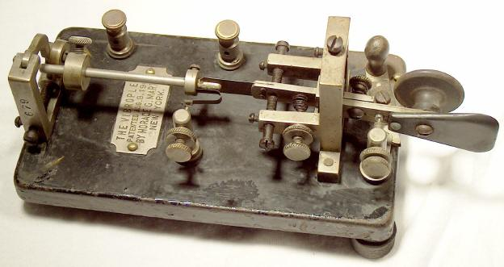
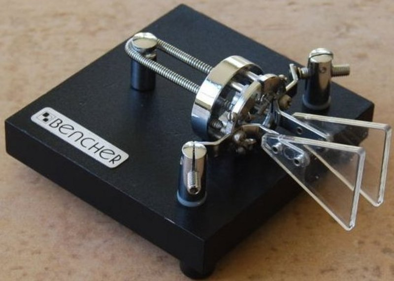

<!doctype html>
<html lang="en">
  <head>
    <meta charset="utf-8">

    <title>The different types of telegraph keys</title>

    <meta name="author" content="Doug Hoyte">

    <meta name="apple-mobile-web-app-capable" content="yes" />
    <meta name="apple-mobile-web-app-status-bar-style" content="black-translucent" />

    <meta name="viewport" content="width=device-width, initial-scale=1.0, maximum-scale=1.0, user-scalable=no, minimal-ui">

    <link rel="stylesheet" href="../reveal.js/css/reveal.css">
    <link rel="stylesheet" href="../reveal.js/css/theme/black.css" id="theme">

    <!-- Code syntax highlighting -->
    <link rel="stylesheet" href="../reveal.js/lib/css/zenburn.css">

    <!-- Printing and PDF exports -->
    <script>
      var link = document.createElement( 'link' );
      link.rel = 'stylesheet';
      link.type = 'text/css';
      link.href = window.location.search.match( /print-pdf/gi ) ? '../reveal.js/css/print/pdf.css' : '../reveal.js/css/print/paper.css';
      document.getElementsByTagName( 'head' )[0].appendChild( link );
    </script>

    <!--[if lt IE 9]>
    <script src="../reveal.js/lib/js/html5shiv.js"></script>
    <![endif]-->

    <style>
      .reveal .slides h1, .reveal .slides h2, .reveal .slides h3 {
        text-transform: none;
      }

      .two-column {
        display: flex;
        flex-wrap: wrap;
      }

      .two-column em {
        margin: 20px;
      }
    </style>
  </head>

  <body>
    <div class="reveal">
      <div class="slides">

<!------------------------------------------------------->


<section data-markdown><script type="text/template">

# The evolution of the telegraph key

Doug Hoyte

VE3HOY

</script></section>


<section data-markdown><script type="text/template">

# Straight keys

<table><tr><td>

</td><td style="vertical-align: top; width: 400px">
<ul>
  <li>Just a simple on/off switch</li>
  <li>Mid-1800s</li>
  <li>Operators suffered from "glass arm" repetitive stress injuries</li>
</ul>
</td></tr></table>

</script></section>


<section data-markdown><script type="text/template">

# Marconi keys

<table><tr><td style="width: 100%; height: 100%">

</td><td style="vertical-align: top; width: 400px">
<ul>
  <li>For wireless communication keys needed to be able to handle very high voltage</li>
</ul>
</td></tr></table>

</script></section>


<section data-markdown><script type="text/template">

# Side-swiper

<table><tr><td>

</td><td style="vertical-align: top; width: 400px">
<ul>
  <li>Two contacts instead of one</li>
  <li>Left-right motion instead of up-down</li>
  <li>Patented in 1888</li>
</ul>
</td></tr></table>

</script></section>


<section data-markdown><script type="text/template">

# Vibroplex

<table><tr><td>

</td><td style="vertical-align: top; width: 400px">
<ul>
  <li>"Semi-automatic": Makes the dits with a pendulum</li>
  <li>AKA "the bug"</li>
  <li>Patented in 1892, first sold in 1904</li>
</ul>
</td></tr></table>

</script></section>


<section data-markdown><script type="text/template">

# Electronic bugs

<table><tr><td>

</td><td style="vertical-align: top; width: 400px">
<ul>
  <li>"automatic": Makes both the dits and dahs</li>
  <li>Pressing left makes dits, right makes dahs</li>
  <li>Invented in 40s, became popular in 60s</li>
</ul>
</td></tr></table>

</script></section>


<section data-markdown><script type="text/template">

# Dual-lever, "iambic"

<table><tr><td>

</td><td style="vertical-align: top; width: 400px">
<ul>
  <li>Two-levers instead of one</li>
  <li>Holding both results in alternating dit-dah sequence</li>
  <li>Most popular for amateur radio today</li>
</ul>
</td></tr></table>

</script></section>


<section data-markdown><script type="text/template">

# Thank you

This presentation:<br/>
[https://hoytech.github.io/presentations/telegraph-keys/](https://hoytech.github.io/presentations/telegraph-keys/)

</script></section>


<!------------------------------------------------------->


      </div>

    </div>

    <script src="../reveal.js/lib/js/head.min.js"></script>
    <script src="../reveal.js/js/reveal.js"></script>

    <script>

      // Full list of configuration options available at:
      // https://github.com/hakimel/reveal.js#configuration
      Reveal.initialize({
        controls: true,
        progress: true,
        history: true,
        center: true,

        transition: 'none', // none/fade/slide/convex/concave/zoom

        // Optional reveal.js plugins
        dependencies: [
          { src: '../reveal.js/plugin/markdown/marked.js', condition: function() { return !!document.querySelector( '[data-markdown]' ); } },
          { src: '../reveal.js/plugin/markdown/markdown.js', condition: function() { return !!document.querySelector( '[data-markdown]' ); } },
          { src: '../reveal.js/plugin/highlight/highlight.js', async: true, callback: function() { hljs.initHighlightingOnLoad(); } },
        ]
      });

    </script>

  </body>
</html>
